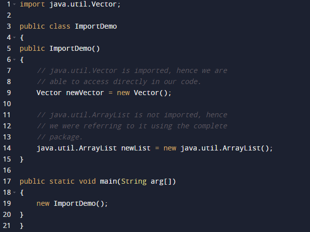

Package in Java is a mechanism to encapsulate a group of classes, sub packages and interfaces. Packages are used for:
• Preventing naming conflicts. For example there can be two classes with name Employee in two packages, college.staff.cse.Employee and college.staff.ee.Employee
• Making searching/locating and usage of classes, interfaces, enumerations and annotations easier
• Providing controlled access: protected and default have package level access control. A protected member is accessible by classes in the same package and its subclasses. A default member (without any access specifier) is accessible by classes in the same package only.
• Packages can be considered as data encapsulation (or data-hiding).
All we need to do is put related classes into packages. After that, we can simply write an import class from existing packages and use it in our program. A package is a container of a group of related classes where some of the classes are accessible are exposed and others are kept for internal purpose.
We can reuse existing classes from the packages as many time as we need it in our program.
How packges work?
Package names and directory structure are closely related. For example if a package name is college.staff.cse, then there are three directories, college, staff and cse such that cse is present in staff and staff is present college. Also, the directory college is accessible through CLASSPATH variable, i.e., path of parent directory of college is present in CLASSPATH. The idea is to make sure that classes are easy to locate.
Package naming conventions : Packages are named in reverse order of domain names, i.e., org.geeksforgeeks.practice. For example, in a college, the recommended convention is college.tech.cse, college.tech.ee, college.art.history, etc.
Adding a class to a Package : We can add more classes to a created package by using package name at the top of the program and saving it in the package directory. We need a new java file to define a public class, otherwise we can add the new class to an existing .java file and recompile it.
Subpackages: Packages that are inside another package are the subpackages. These are not imported by default, they have to imported explicitly. Also, members of a subpackage have no access privileges, i.e., they are considered as different package for protected and default access specifiers.
Example:
import java.util.*;
util is a subpackage created inside java package.
Accessing classes inside a package
Consider following two statements:
// import the Vector class from util package.
import java.util.vector;
// import all the classes from util package
import java.util.*;
• First Statement is used to import Vector class from util package which is contained inside java.
• Second statement imports all the classes from util package.
// All the classes and interfaces of this package
// will be accessible but not subpackages.
import package.*;
// Only mentioned class of this package will be accessible.
import package.classname;
// Class name is generally used when two packages have the same
// class name. For example in below code both packages have
// date class so using a fully qualified name to avoid conflict
import java.util.Date;
import my.package.Date;
Example

Types of Packages

User-defined packages are those packages that are designed or created by the developer to categorize classes and packages. They are much similar to the built-in that java offers. It can be imported into other classes and used the same as we use built-in packages.
Packages in java are used to avoid naming conflict and to control the access of class, interface, sub-classes, etc. A package can be defined as a group of similar types of classes, sub-classes, interfaces or enumerations, etc.
As the name suggests access modifiers in Java helps to restrict the scope of a class, constructor, variable, method, or data member. There are four types of access modifiers available in java:
1. Default – No keyword required
2. Private
3. Protected
4. Public